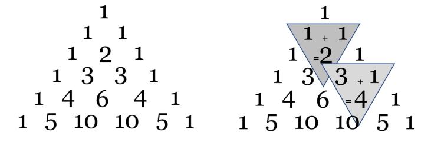
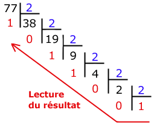
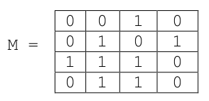
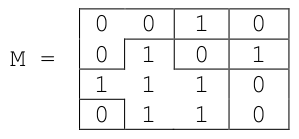
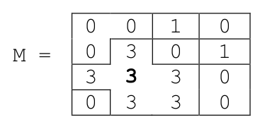
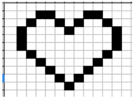
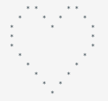
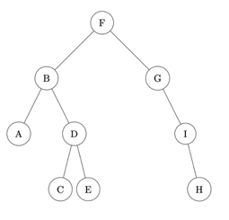

Banque d'exercices
Vous trouverez ci-dessous l'intégralité des sujets de l'épreuve pratique, disponibles publiquement sur la Banque Nationale des Sujets (novembre 2021).
Une nouvelle version (qui sera a priori en grande partie semblable à celle-ci) sera publiée en janvier 2022 sur le site Eduscol.
Pdf de l'intégralité des exercices.
Sujet 01 ✏️
Exercice 01.1
Programmer la fonction recherche, prenant en paramètre un tableau non vide tab (type list) d'entiers et un entier n, et qui renvoie l'indice de la dernière occurrence de l'élément cherché. Si l'élément n'est pas présent, la fonction renvoie la longueur du tableau.
Exemples :
>>> recherche([5, 3], 1)
2
>>> recherche([2, 4], 2)
0
>>> recherche([2, 3, 5, 2, 4], 2)
3
def recherche(tab, n):
indice_solution = len(tab)
for i in range(len(tab)):
if tab[i] == n:
indice_solution = i
return indice_solution
Exercice 01.2
On souhaite programmer une fonction donnant la distance la plus courte entre un point de départ et une liste de points. Les points sont tous à coordonnées entières.
Les points sont donnés sous la forme d'un tuple de deux entiers.
La liste des points à traiter est donc un tableau de tuples.
On rappelle que la distance entre deux points du plan de coordonnées \((x;y)\) et \((x';y')\) est donnée par la formule :
On importe pour cela la fonction racine carrée (sqrt) du module math de Python.
On dispose d'une fonction distance et d'une fonction plus_courte_distance :
from math import sqrt # import de la fonction racine carrée
def distance(point1, point2):
""" Calcule et renvoie la distance entre deux points. """
return sqrt((...)**2 + (...)**2)
assert distance((1, 0), (5, 3)) == 5.0, "erreur de calcul"
def plus_courte_distance(tab, depart):
""" Renvoie le point du tableau tab se trouvant à la plus courte distance du point depart."""
point = tab[0]
min_dist = ...
for i in range (1, ...):
if distance(tab[i], depart)...:
point = ...
min_dist = ...
return point
assert plus_courte_distance([(7, 9), (2, 5), (5, 2)], (0, 0)) == (2, 5), "erreur"
assert) à la fonction distance permettant de vérifier la ou les préconditions.
from math import sqrt
def distance(point1, point2):
""" Calcule et renvoie la distance entre deux points. """
return sqrt((point1[0] - point2[0])**2 + ((point1[1] - point2[1]))**2)
assert distance((1, 0), (5, 3)) == 5.0, "erreur de calcul"
def plus_courte_distance(tab, depart):
""" Renvoie le point du tableau tab se trouvant à la plus courte distance du point depart."""
point = tab[0]
min_dist = distance(point, depart)
for i in range (1, len(tab)):
if distance(tab[i], depart) < min_dist:
point = tab[i]
min_dist = distance(tab[i], depart)
return point
assert plus_courte_distance([(7, 9), (2, 5), (5, 2)], (0, 0)) == (2, 5), "erreur"
Sujet 02 ✏️
Exercice 02.1
Programmer la fonction moyenne prenant en paramètre un tableau d'entiers tab (type list) qui renvoie la moyenne de ses éléments si le tableau est non vide et affiche 'erreur' si le tableau est vide.
Exemples :
>>> moyenne([5, 3, 8])
5.333333333333333
>>> moyenne([1, 2, 3, 4, 5, 6, 7, 8, 9, 10])
5.5
>>> moyenne([])
'erreur'
L'énoncé n'est pas très clair quand il dit « d'afficher 'erreur'» (ce qui suppose un print et non un return). Nous choisissons donc dans ce cas de renvoyer None.
def moyenne(tab):
if tab == []:
print('erreur')
return None
else:
somme = 0
for elt in tab:
somme += elt
return somme / len(tab)
Exercice 02.2
On considère un tableau d'entiers tab (type list dont les éléments sont des 0 ou des 1). On se propose de trier ce tableau selon l'algorithme suivant : à chaque étape du tri, le tableau est constitué de trois zones consécutives, la première ne contenant que des 0, la seconde n'étant pas triée et la dernière ne contenant que des 1.
Zone de 0 | Zone non triée | Zone de 1 |
- si cet élément vaut
0, on considère qu'il appartient désormais à la zone ne contenant que des0; - si cet élément vaut
1, il est échangé avec le dernier élément de la zone non triée et on considère alors qu’il appartient à la zone ne contenant que des1.
1.
Recopier sous Python en la complétant la fonction tri suivante :
def tri(tab):
#i est le premier indice de la zone non triee, j le dernier indice.
#Au debut, la zone non triee est le tableau entier.
i = ...
j = ...
while i != j :
if tab[i] == 0:
i = ...
else :
valeur = tab[j]
tab[j] = ...
...
j = ...
...
Exemple :
>>> tri([0, 1, 0, 1, 0, 1, 0, 1, 0])
[0, 0, 0, 0, 0, 1, 1, 1, 1]
def tri(tab):
#i est le premier indice de la zone non triee, j le dernier indice.
#Au debut, la zone non triee est le tableau entier.
i = 0
j = len(tab) - 1
while i != j :
if tab[i] == 0:
i = i + 1
else :
valeur = tab[j]
tab[j] = tab[i]
tab[i] = valeur
j = j - 1
return tab
Sujet 03 ✏️
Exercice 03.1
Programmer la fonction multiplication, prenant en paramètres deux nombres entiers
n1 et n2, et qui renvoie le produit de ces deux nombres.
Les seules opérations autorisées sont l’addition et la soustraction.
Exemples :
>>> multiplication(3,5)
15
>>> multiplication(-4,-8)
32
>>> multiplication(-2,6)
-12
>>> multiplication(-2,0)
0
On utilise le fait que \(5 \times (-6)= - (5 \times 6)\).
def multiplication(n1, n2):
if n1 < 0:
return -multiplication(-n1, n2)
if n2 < 0:
return -multiplication(n1, -n2)
resultat = 0
for _ in range(n2):
resultat += n1
return resultat
Exercice 03.2
Recopier et compléter sous Python la fonction suivante en respectant la spécification. On ne recopiera pas les commentaires.
def dichotomie(tab, x):
"""
tab : tableau d’entiers trié dans l’ordre croissant
x : nombre entier
La fonction renvoie True si tab contient x et False sinon
"""
debut = 0
fin = len(tab) - 1
while debut <= fin:
m = ...
if x == tab[m]:
return ...
if x > tab[m]:
debut = m + 1
else:
fin = ...
return ...
Exemples :
>>> dichotomie([15, 16, 18, 19, 23, 24, 28, 29, 31, 33], 28)
True
>>> dichotomie([15, 16, 18, 19, 23, 24, 28, 29, 31, 33], 27)
False
def dichotomie(tab, x):
"""
tab : tableau d’entiers trié dans l’ordre croissant
x : nombre entier
La fonction renvoie True si tab contient x et False sinon
"""
debut = 0
fin = len(tab) - 1
while debut <= fin:
m = (debut + fin) // 2
if x == tab[m]:
return True
if x > tab[m]:
debut = m + 1
else:
fin = m - 1
return False
Sujet 04 ✏️
Exercice 04.1
Écrire une fonction qui prend en paramètre un tableau d'entiers non vide et qui renvoie la moyenne de ces entiers.
La fonction est spécifiée ci-après et doit passer les assertions fournies.
def moyenne (tab):
'''
moyenne(list) -> float
Entrée : un tableau non vide d'entiers
Sortie : nombre de type float
Correspondant à la moyenne des valeurs présentes dans le
tableau
'''
assert moyenne([1]) == 1
assert moyenne([1, 2, 3, 4, 5, 6, 7]) == 4
assert moyenne([1, 2]) == 1.5
def moyenne(tab):
'''
moyenne(list) -> float
Entrée : un tableau non vide d'entiers
Sortie : nombre de type float
Correspondant à la moyenne des valeurs présentes dans le
tableau
'''
somme = 0
for elt in tab:
somme += elt
return somme / len(tab)
Exercice 04.2
Le but de l'exercice est de compléter une fonction qui détermine si une valeur est présente dans un tableau de valeurs triées dans l'ordre croissant.
L'algorithme traite le cas du tableau vide.
L'algorithme est écrit pour que la recherche dichotomique ne se fasse que dans le cas où la valeur est comprise entre les valeurs extrêmes du tableau.
On distingue les trois cas qui renvoient False en renvoyant False, 1 , False, 2 et False, 3.
Compléter l'algorithme de dichotomie donné ci-après.
def dichotomie(tab, x):
"""
tab : tableau trié dans l’ordre croissant
x : nombre entier
La fonction renvoie True si tab contient x et False sinon
"""
# cas du tableau vide
if ...:
return False, 1
# cas où x n'est pas compris entre les valeurs extrêmes
if (x < tab[0]) or ...:
return False, 2
debut = 0
fin = len(tab) - 1
while debut <= fin:
m = ...
if x == tab[m]:
return ...
if x > tab[m]:
debut = m + 1
else:
fin = ...
return ...
>>> dichotomie([15, 16, 18, 19, 23, 24, 28, 29, 31, 33], 28)
True
>>> dichotomie([15, 16, 18, 19, 23, 24, 28, 29, 31, 33], 27)
(False, 3)
>>> dichotomie([15, 16, 18, 19, 23, 24, 28, 29, 31, 33], 1)
(False, 2)
>>> dichotomie([], 28)
(False, 1)
def dichotomie(tab, x):
"""
tab : tableau trié dans l’ordre croissant
x : nombre entier
La fonction renvoie True si tab contient x et False sinon
"""
# cas du tableau vide
if tab = []:
return False,1
# cas où x n'est pas compris entre les valeurs extrêmes
if (x < tab[0]) or (x > tab[-1]):
return False,2
debut = 0
fin = len(tab) - 1
while debut <= fin:
m = (debut + fin) // 2
if x == tab[m]:
return True
if x > tab[m]:
debut = m + 1
else:
fin = m - 1
return False
Sujet 05 ✏️
Exercice 05.1
On modélise la représentation binaire d'un entier non signé par un tableau d'entiers dont
les éléments sont 0 ou 1. Par exemple, l'écriture décimale est
2**6 + 2**4 + 2**1 + 2**0 = 83.
À l'aide d'un parcours séquentiel, écrire la fonction convertir répondant aux
spécifications suivantes :
def convertir(T):
"""
T est un tableau d'entiers, dont les éléments sont 0 ou 1 et
représentant un entier écrit en binaire. Renvoie l'écriture
décimale de l'entier positif dont la représentation binaire
est donnée par le tableau T
"""
>>> convertir([1, 0, 1, 0, 0, 1, 1])
83
>>> convertir([1, 0, 0, 0, 0, 0, 1, 0])
130
def convertir(T):
puissance = 0
total = 0
for i in range(len(T)-1, -1, -1):
total += T[i] * (2 ** puissance)
puissance += 1
return total
Exercice 05.2
La fonction tri_insertion suivante prend en argument une liste L et trie cette liste en utilisant la méthode du tri par insertion. Compléter cette fonction pour qu'elle réponde à la spécification demandée.
def tri_insertion(L):
n = len(L)
# cas du tableau vide
if ...:
return L
for j in range(1, n):
e = L[j]
i = j
# A l'étape j, le sous-tableau L[0,j-1] est trié
# et on insère L[j] dans ce sous-tableau en déterminant
# le plus petit i tel que 0 <= i <= j et L[i-1] > L[j].
while i > 0 and L[i-1] > ...:
i = ...
# si i != j, on décale le sous tableau L[i,j-1] d’un cran
# vers la droite et on place L[j] en position i
if i != j:
for k in range(j, i,...):
L[k] = L[...]
L[i] = ...
return L
>>> tri_insertion([2, 5, -1, 7, 0, 28])
[-1, 0, 2, 5, 7, 28]
>>> tri_insertion([10, 9, 8, 7, 6, 5, 4, 3, 2, 1, 0])
[0, 1, 2, 3, 4, 5, 6, 7, 8, 9, 10]
def tri_insertion(L):
n = len(L)
# cas du tableau vide
if L == []:
return L
for j in range(1, n):
e = L[j]
i = j
# A l'étape j, le sous-tableau L[0,j-1] est trié
# et on insère L[j] dans ce sous-tableau en déterminant
# le plus petit i tel que 0 <= i <= j et L[i-1] > L[j].
while i > 0 and L[i-1] > e:
i = i - 1
# si i != j, on décale le sous tableau L[i,j-1] d’un cran
# vers la droite et on place L[j] en position i
if i != j:
for k in range(j, i, -1):
L[k] = L[k-1]
L[i] = e
return L
Sujet 06 ✏️
Exercice 06.1
On s’intéresse au problème du rendu de monnaie. On suppose qu’on dispose d’un nombre infini de billets de 5 euros, de pièces de 2 euros et de pièces de 1 euro.
Le but est d’écrire une fonction nommée rendu dont le paramètre est un entier positif non nul somme_a_rendre et qui retourne une liste de trois entiers n1, n2 et n3 qui correspondent aux nombres de billets de 5 euros (n1) de pièces de 2 euros (n2) et de pièces de 1 euro (n3) à rendre afin que le total rendu soit égal à somme_a_rendre.
On utilisera un algorithme glouton : on commencera par rendre le nombre maximal de billets de 5 euros, puis celui des pièces de 2 euros et enfin celui des pièces de 1 euros. Exemples :
>>> rendu(13)
[2, 1, 1]
>>> rendu(64)
[12, 2, 0]
>>> rendu(89)
[17, 2, 0]
def rendu(somme_a_rendre):
pieces = [5, 2, 1]
retour = [0, 0, 0]
reste_a_rendre = somme_a_rendre
for i in range(3):
retour[i] = reste_a_rendre // pieces[i]
reste_a_rendre = reste_a_rendre % pieces[i]
return retour
à noter une erreur dans la version officielle, sur la méthode enfile()
Exercice 06.2
On veut écrire une classe pour gérer une file à l’aide d’une liste chaînée. On dispose d’une
classe Maillon permettant la création d’un maillon de la chaîne, celui-ci étant constitué d’une valeur et d’une référence au maillon suivant de la chaîne :
class Maillon :
def __init__(self,v) :
self.valeur = v
self.suivant = None
File suivante où l’attribut dernier_file contient le maillon correspondant à l’élément arrivé en dernier dans la file :
class File :
def __init__(self) :
self.dernier_file = None
def enfile(self,element) :
nouveau_maillon = Maillon(...)
nouveau_maillon.suivant = self.dernier_file
self.dernier_file = ...
def est_vide(self) :
return self.dernier_file == None
def affiche(self) :
maillon = self.dernier_file
while maillon != ... :
print(maillon.valeur)
maillon = ...
def defile(self) :
if not self.est_vide() :
if self.dernier_file.suivant == None :
resultat = self.dernier_file.valeur
self.dernier_file = None
return resultat
maillon = ...
while maillon.suivant.suivant != None :
maillon = maillon.suivant
resultat = ...
maillon.suivant = None
return resultat
return None
>>> F = File()
>>> F.est_vide()
True
>>> F.enfile(2)
>>> F.affiche()
2
>>> F.est_vide()
False
>>> F.enfile(5)
>>> F.enfile(7)
>>> F.affiche()
7
5
2
>>> F.defile()
2
>>> F.defile()
5
>>> F.affiche()
7
class Maillon :
def __init__(self,v) :
self.valeur = v
self.suivant = None
class File :
def __init__(self) :
self.dernier_file = None
def enfile(self,element) :
nouveau_maillon = Maillon(element)
nouveau_maillon.suivant = self.dernier_file
self.dernier_file = nouveau_maillon
def est_vide(self) :
return self.dernier_file == None
def affiche(self) :
maillon = self.dernier_file
while maillon != None :
print(maillon.valeur)
maillon = maillon.suivant
def defile(self) :
if not self.est_vide() :
if self.dernier_file.suivant == None :
resultat = self.dernier_file.valeur
self.dernier_file = None
return resultat
maillon = self.dernier_file
while maillon.suivant.suivant != None :
maillon = maillon.suivant
resultat = maillon.suivant.valeur
maillon.suivant = None
return resultat
return None
Sujet 07 ✏️
Exercice 07.1
On s’intéresse à la suite d’entiers définie par
U1 = 1, U2 = 1 et, pour tout entier naturel n, par Un+2 = Un+1 + Un.Elle s’appelle la suite de Fibonacci.
Écrire la fonction fibonacci qui prend un entier n > 0 et qui renvoie l’élément d’indice n de cette suite.
On utilisera une programmation dynamique (pas de récursivité). Exemple :
>>> fibonacci(1)
1
>>> fibonacci(2)
1
>>> fibonacci(25)
75025
>>> fibonacci(45)
1134903170
On utilise un dictionnaire pour stocker au fur et à mesure les valeurs.
def fibonnaci(n):
d = {}
d[1] = 1
d[2] = 1
for k in range(3, n+1):
d[k] = d[k-1] + d[k-2]
return d[n]
Exercice 07.2
Les variables liste_eleves et liste_notes ayant été préalablement définies et étant de même longueur, la fonction meilleures_notes renvoie la note maximale qui a été attribuée, le nombre d’élèves ayant obtenu cette note et la liste des noms de ces élèves.
Compléter le code Python de la fonction meilleures_notes ci-dessous.
liste_eleves = ['a', 'b', 'c', 'd', 'e', 'f', 'g', 'h', 'i', 'j']
liste_notes = [1, 40, 80, 60, 58, 80, 75, 80, 60, 24]
def meilleures_notes():
note_maxi = 0
nb_eleves_note_maxi = ...
liste_maxi = ...
for compteur in range(...):
if liste_notes[compteur] == ...:
nb_eleves_note_maxi = nb_eleves_note_maxi + 1
liste_maxi.append(liste_eleves[...])
if liste_notes[compteur] > note_maxi:
note_maxi = liste_notes[compteur]
nb_eleves_note_maxi = ...
liste_maxi = [...]
return (note_maxi,nb_eleves_note_maxi,liste_maxi)
>>> meilleures_notes()
(80, 3, ['c', 'f', 'h'])
liste_eleves = ['a', 'b', 'c', 'd', 'e', 'f', 'g', 'h', 'i', 'j']
liste_notes = [1, 40, 80, 60, 58, 80, 75, 80, 60, 24]
def meilleures_notes():
note_maxi = 0
nb_eleves_note_maxi = 0
liste_maxi = []
for compteur in range(len(liste_eleves)):
if liste_notes[compteur] == note_maxi:
nb_eleves_note_maxi = nb_eleves_note_maxi + 1
liste_maxi.append(liste_eleves[compteur])
if liste_notes[compteur] > note_maxi:
note_maxi = liste_notes[compteur]
nb_eleves_note_maxi = 1
liste_maxi = [liste_eleves[compteur]]
return (note_maxi,nb_eleves_note_maxi,liste_maxi)
Sujet 08 ✏️
Exercice 08.1
Écrire une fonction recherche qui prend en paramètres caractere, un caractère, et mot, une chaîne de caractères, et qui renvoie le nombre d’occurrences de caractere dans mot, c’est-à-dire le nombre de fois où caractere apparaît dans mot.
Exemples :
>>> recherche('e', "sciences")
2
>>> recherche('i', "mississippi")
4
>>> recherche('a', "mississippi")
0
def recherche(caractere, mot):
somme = 0
for lettre in mot:
if lettre == caractere:
somme += 1
return somme
Exercice 08.2
On s’intéresse à un algorithme récursif qui permet de rendre la monnaie à partir d’une
liste donnée de valeurs de pièces et de billets - le système monétaire est donné sous
forme d’une liste pieces=[100, 50, 20, 10, 5, 2, 1] - (on supposera qu’il n’y a
pas de limitation quant à leur nombre), on cherche à donner la liste de pièces à rendre
pour une somme donnée en argument.
Compléter le code Python ci-dessous de la fonction rendu_glouton qui implémente cet algorithme et renvoie la liste des pièces à rendre.
pieces = [100, 50, 20, 10, 5, 2, 1]
def rendu_glouton(arendre, solution=[], i=0):
if arendre == 0:
return ...
p = pieces[i]
if p <= ... :
solution.append(...)
return rendu_glouton(arendre - p, solution,i)
else :
return rendu_glouton(arendre, solution, ...)
>>>rendu_glouton(68, [], 0)
[50, 10, 5, 2, 1]
>>>rendu_glouton(291, [], 0)
[100, 100, 50, 20, 20, 1]
pieces = [100, 50, 20, 10, 5, 2, 1]
def rendu_glouton(arendre, solution=[], i=0):
if arendre == 0:
return solution
p = pieces[i]
if p <= arendre :
solution.append(p)
return rendu_glouton(arendre-p, solution,i)
else :
return rendu_glouton(arendre, solution, i+1)
Sujet 09 ✏️
Exercice 09.1
Soit le couple (note,coefficient) :
noteest un nombre de type flottant (float) compris entre 0 et 20 ;coefficientest un nombre entier positif.
note, coefficient).
Écrire une fonction moyenne qui renvoie la moyenne pondérée de cette liste donnée en paramètre.
Par exemple, l’expression moyenne([(15, 2), (9, 1), (12, 3)]) devra renvoyer le
résultat du calcul suivant :
def moyenne(tab):
somme_notes = 0
somme_coeffs = 0
for devoir in tab:
note = devoir[0]
coeff = devoir[1]
somme_notes += note * coeff
somme_coeffs += coeff
return somme_notes / somme_coeffs
Exercice 09.2
On cherche à déterminer les valeurs du triangle de Pascal. Dans ce tableau de forme triangulaire, chaque ligne commence et se termine par le nombre 1. Par ailleurs, la valeur qui occupe une case située à l’intérieur du tableau s’obtient en ajoutant les valeurs des deux cases situées juste au-dessus, comme l’indique la figure suivante :

Compléter la fonction pascal ci-après. Elle doit renvoyer une liste correspondant au triangle de Pascal de la ligne 1 à la ligne n où n est un nombre entier supérieur ou égal à 2 (le tableau sera contenu dans la variable C).
La variable Ck doit, quant à elle, contenir, à l’étape numéro k, la k-ième ligne du tableau.
def pascal(n):
C= [[1]]
for k in range(1,...):
Ck = [...]
for i in range(1,k):
Ck.append(C[...][i-1]+C[...][...] )
Ck.append(...)
C.append(Ck)
return C
n = 4, voici ce qu'on devra obtenir :
>>> pascal(4)
[[1], [1, 1], [1, 2, 1], [1, 3, 3, 1], [1, 4, 6, 4, 1]]
n = 5, voici ce qu'on devra obtenir :
>>> pascal(5)
[[1], [1, 1], [1, 2, 1], [1, 3, 3, 1], [1, 4, 6, 4, 1], [1, 5, 10, 10, 5, 1]]
def pascal(n):
C = [[1]]
for k in range(1,n+1):
Ck = [1]
for i in range(1,k):
Ck.append(C[k-1][i-1]+C[k-1][i] )
Ck.append(1)
C.append(Ck)
return C
Sujet 10 ✏️
Exercice 10.1
Écrire une fonction maxi qui prend en paramètre une liste tab de nombres entiers et renvoie un couple donnant le plus grand élément de cette liste, ainsi que l’indice de la première apparition de ce maximum dans la liste.
Exemple :
>>> maxi([1, 5, 6, 9, 1, 2, 3, 7, 9, 8])
(9, 3)
def maxi(tab):
val_max = tab[0]
pos_max = 0
for i in range(len(tab)):
if tab[i] > val_max:
val_max = tab[i]
pos_max = i
return (val_max, pos_max)
Exercice 10.2
Cet exercice utilise des piles qui seront représentées en Python par des listes (type list).
On rappelle que l’expression T1 = list(T) fait une copie de T indépendante de T, que l’expression x = T.pop() enlève le sommet de la pile T et le place dans la variable x et, enfin, que l’expression T.append(v) place la valeur v au sommet de la pile T.
Compléter le code Python de la fonction positif ci-dessous qui prend une pile T de nombres entiers en paramètre et qui renvoie la pile des entiers positifs dans le même ordre, sans modifier la variable T.
def positif(T):
T2 = ...(T)
T3 = ...
while T2 != []:
x = ...
if ... >= 0:
T3.append(...)
T2 = []
while T3 != ...:
x = T3.pop()
...
print('T = ',T)
return T2
>>> positif([-1, 0, 5, -3, 4, -6, 10, 9, -8])
[0, 5, 4, 10, 9]
def positif(T):
T2 = list(T)
T3 = []
while T2 != []:
x = T2.pop()
if x >= 0:
T3.append(x)
T2 = [] # <- NB : cette ligne est inutile
while T3 != []:
x = T3.pop()
T2.append(x)
print('T = ',T)
return T2
Sujet 11 ✏️
Exercice 11.1
Écrire une fonction conv_bin qui prend en paramètre un entier positif n et renvoie un
couple (b, bit) où :
best une liste d'entiers correspondant à la représentation binaire den;bitcorrespond aux nombre de bits qui constituentb.
>>> conv_bin(9)
([1, 0, 0, 1], 4)
- l'opérateur
//donne le quotient de la division euclidienne :5 // 2donne2; - l'opérateur
%donne le reste de la division euclidienne :5 % 2donne1; appendest une méthode qui ajoute un élément à une liste existante :
SoitT = [5, 2, 4], alorsT.append(10)ajoute10à la listeT. Ainsi,Tdevient[5, 2, 4, 10].reverseest une méthode qui renverse les éléments d'une liste.
SoitT = [5, 2, 4, 10]. AprèsT.reverse(), la liste devient[10, 4, 2, 5].
n en partant de la gauche en appliquant successivement les instructions :b = n % 2n = n // 2répétées autant que nécessaire.
def conv_bin(n):
b = []
bits = 0
while n != 0:
b.append(n % 2)
bits += 1
n = n // 2
b.reverse()
return (b, bits)
Exercice 11.2
La fonction tri_bulles prend en paramètre une liste T d’entiers non triés et renvoie la liste triée par ordre croissant.
Compléter le code Python ci-dessous qui implémente la fonction tri_bulles.
def tri_bulles(T):
n = len(T)
for i in range(...,...,-1):
for j in range(i):
if T[j] > T[...]:
... = T[j]
T[j] = T[...]
T[j+1] = temp
return T
for i in range(n-1):
def tri_bulles(T):
n = len(T)
for i in range(n-1,0,-1):
for j in range(i):
if T[j] > T[j+1]:
temp = T[j]
T[j] = T[j+1]
T[j+1] = temp
return T
#version 2
def tri_bulles(T):
n = len(T)
for i in range(n-1):
for j in range(n-1,i,-1):
if T[j] < T[j-1]:
temp = T[j]
T[j] = T[j-1]
T[j-1] = temp
return T
Sujet 12 ✏️
Cet exercice est le même que le 10.1... 🤷
Exercice 12.1
Écrire une fonction maxi qui prend en paramètre une liste tab de nombres entiers et renvoie un couple donnant le plus grand élément de cette liste, ainsi que l’indice de la première apparition de ce maximum dans la liste.
Exemple :
>>> maxi([1, 5, 6, 9, 1, 2, 3, 7, 9, 8])
(9, 3)
def maxi(tab):
val_max = tab[0]
pos_max = 0
for i in range(len(tab)):
if tab[i] > val_max:
val_max = tab[i]
pos_max = i
return (val_max, pos_max)
Exercice 12.2
La fonction recherche prend en paramètres deux chaines de caractères gene et seq_adn et renvoie True si on retrouve gene dans seq_adn et False sinon.
Compléter le code Python ci-dessous pour qu’il implémente la fonction recherche.
def recherche(gene, seq_adn):
n = len(seq_adn)
g = len(gene)
i = ...
trouve = False
while i < ... and trouve == ... :
j = 0
while j < g and gene[j] == seq_adn[i+j]:
...
if j == g:
trouve = True
...
return trouve
>>> recherche("AATC", "GTACAAATCTTGCC")
True
>>> recherche("AGTC", "GTACAAATCTTGCC")
False
def recherche(gene, seq_adn):
n = len(seq_adn)
g = len(gene)
i = 0
trouve = False
while i < n-g and trouve == False :
j = 0
while j < g and gene[j] == seq_adn[i+j]:
j += 1
if j == g:
trouve = True
i += 1
return trouve
Sujet 13 ✏️
Exercice 13.1
Écrire une fonction tri_selection qui prend en paramètre une liste tab de nombres entiers et qui renvoie le tableau trié par ordre croissant.
On utilisera l’algorithme suivant :
- on recherche le plus petit élément du tableau, et on l'échange avec l'élément d'indice
0; - on recherche le second plus petit élément du tableau, et on l'échange avec l'élément
d'indice
1; - on continue de cette façon jusqu'à ce que le tableau soit entièrement trié.
>>> tri_selection([1, 52, 6, -9, 12])
[-9, 1, 6, 12, 52]
def tri_selection(tab):
for i in range(len(tab)-1):
indice_min = i
for j in range(i+1, len(tab)):
if tab[j] < tab[indice_min]:
indice_min = j
tab[i], tab[indice_min] = tab[indice_min], tab[i]
return tab
Exercice 13.2
Le jeu du « plus ou moins » consiste à deviner un nombre entier choisi entre 1 et 99. Un élève de NSI décide de le coder en langage Python de la manière suivante :
- le programme génère un nombre entier aléatoire compris entre 1 et 99 ;
- si la proposition de l’utilisateur est plus petite que le nombre cherché, l’utilisateur en
est averti. Il peut alors en tester un autre ;
- si la proposition de l’utilisateur est plus grande que le nombre cherché, l’utilisateur en
est averti. Il peut alors en tester un autre ;
- si l’utilisateur trouve le bon nombre en 10 essais ou moins, il gagne ;
- si l’utilisateur a fait plus de 10 essais sans trouver le bon nombre, il perd.
randint est utilisée. Si a et b sont des entiers, randint(a,b) renvoie un nombre entier compris entre a et b.
Compléter le code ci-dessous et le tester :
from random import randint
def plus_ou_moins():
nb_mystere = randint(1,...)
nb_test = int(input("Proposez un nombre entre 1 et 99 : "))
compteur = ...
while nb_mystere != ... and compteur < ... :
compteur = compteur + ...
if nb_mystere ... nb_test:
nb_test = int(input("Trop petit ! Testez encore : "))
else:
nb_test = int(input("Trop grand ! Testez encore : "))
if nb_mystere == nb_test:
print ("Bravo ! Le nombre était ",...)
print("Nombre d'essais: ",...)
else:
print ("Perdu ! Le nombre était ",...)
from random import randint
def plus_ou_moins():
nb_mystere = randint(1,100)
nb_test = int(input('Proposez un nombre entre 1 et 99 : '))
compteur = 0
while nb_mystere != nb_test and compteur < 10 :
compteur = compteur + 1
if nb_mystere > nb_test:
nb_test = int(input('Trop petit ! Testez encore : '))
else:
nb_test = int(input('Trop grand ! Testez encore : '))
if nb_mystere == nb_test:
print ('Bravo ! Le nombre était ', nb_mystere)
print('Nombre d essais: ', compteur)
else:
print ('Perdu ! Le nombre était ', nb_mystere)
Sujet 14 ✏️
Exercice 14.1
Écrire une fonction recherche qui prend en paramètres elt un nombre et tab un tableau de nombres, et qui renvoie le tableau des indices de elt dans tab si elt est dans tab et le tableau vide [] sinon.
Exemples :
>>> recherche(3, [3, 2, 1, 3, 2, 1])
[0, 3]
>>> recherche(4, [1, 2, 3])
[]
def recherche(elt, tab):
tab_indices = []
for i in range(len(tab)):
if tab[i] == elt:
tab_indices.append(i)
return tab_indices
Exercice 14.2
Un professeur de NSI décide de gérer les résultats de sa classe sous la forme d’un dictionnaire :
- les clefs sont les noms des élèves ;
- les valeurs sont des dictionnaires dont les clefs sont les types d’épreuves et les
valeurs sont les notes obtenues associées à leurs coefficients.
resultats = {'Dupont': { 'DS1': [15.5, 4], 'DM1': [14.5, 1], 'DS2': [13, 4], 'PROJET1': [16, 3], 'DS3': [14, 4]},
'Durand': { 'DS1': [6 , 4], 'DM1': [14.5, 1], 'DS2': [8, 4], 'PROJET1' :[9, 3], 'IE1': [7, 2], 'DS3': [8, 4], 'DS4': [15, 4]}}
Le professeur crée une fonction moyenne qui prend en paramètre le nom d’un de ces
élèves et lui renvoie sa moyenne arrondie au dixième.
Compléter le code du professeur ci-dessous :
def moyenne(nom):
if nom in ...:
notes = resultats[nom]
total_points = ...
total_coefficients = ...
for ... in notes.values():
note , coefficient = valeurs
total_points = total_points + ... * coefficient
total_coefficients = ... + coefficient
return round(... / total_coefficients, 1)
else:
return -1
resultats = {'Dupont': { 'DS1': [15.5, 4], 'DM1': [14.5, 1], 'DS2': [13, 4], 'PROJET1': [16, 3], 'DS3': [14, 4]},
'Durand': { 'DS1': [6 , 4], 'DM1': [14.5, 1], 'DS2': [8, 4], 'PROJET1' :[9, 3], 'IE1': [7, 2], 'DS3': [8, 4], 'DS4': [15, 4]}}
def moyenne(nom):
if nom in resultats:
notes = resultats[nom]
total_points = 0
total_coefficients = 0
for valeurs in notes.values():
note , coefficient = valeurs
total_points = total_points + note * coefficient
total_coefficients = total_coefficients + coefficient
return round(total_points / total_coefficients, 1)
else:
return -1
Sujet 15 ✏️
Exercice 15.1
Écrire une fonction rechercheMinMax qui prend en paramètre un tableau de nombres
non triés tab, et qui renvoie la plus petite et la plus grande valeur du tableau sous la forme d’un dictionnaire à deux clés 'min' et 'max'.
Les tableaux seront représentés sous forme de liste Python.
Exemples :
>>> tableau = [0, 1, 4, 2, -2, 9, 3, 1, 7, 1]
>>> resultat = rechercheMinMax(tableau)
>>> resultat
{'min': -2, 'max': 9}
>>> tableau = []
>>> resultat = rechercheMinMax(tableau)
>>> resultat
{'min': None, 'max': None}
def rechercheMinMax(tab):
d = {}
d['min'] = None
d['max'] = None
for val in tab:
if val < d['min']:
d['min'] = val
if val > d['max']:
d['max'] = val
return d
Exercice 15.2
On dispose d’un programme permettant de créer un objet de type PaquetDeCarte,
selon les éléments indiqués dans le code ci-dessous.
Compléter ce code aux endroits indiqués par #A compléter, puis ajouter des
assertions dans l’initialiseur de Carte, ainsi que dans la méthode getCarteAt().
class Carte:
"""Initialise Couleur (entre 1 à 4), et Valeur (entre 1 à 13)"""
def __init__(self, c, v):
self.Couleur = c
self.Valeur = v
"""Renvoie le nom de la Carte As, 2, ... 10, Valet, Dame, Roi"""
def getNom(self):
if (self.Valeur > 1 and self.Valeur < 11):
return str(self.Valeur)
elif self.Valeur == 11:
return "Valet"
elif self.Valeur == 12:
return "Dame"
elif self.Valeur == 13:
return "Roi"
else:
return "As"
"""Renvoie la couleur de la Carte (parmi pique, coeur, carreau, trefle"""
def getCouleur(self):
return ['pique', 'coeur', 'carreau', 'trefle'][self.Couleur - 1]
class PaquetDeCarte:
def __init__(self):
self.contenu = []
"""Remplit le paquet de cartes"""
def remplir(self):
#A compléter
"""Renvoie la Carte qui se trouve à la position donnée"""
def getCarteAt(self, pos):
#A compléter
>>> unPaquet = PaquetDeCarte()
>>> unPaquet.remplir()
>>> uneCarte = unPaquet.getCarteAt(20)
>>> print(uneCarte.getNom() + " de " + uneCarte.getCouleur())
Attention, le code proposé ne respecte pas les standards de notation :
- il ne faut pas de majuscules sur les noms des attributs ;
- la docstring se place à l'intérieur de la fonction et non au-dessus.
class Carte:
"""Initialise Couleur (entre 1 à 4), et Valeur (entre 1 à 13)"""
def __init__(self, c, v):
assert c in range(1,5)
assert v in range(1,14)
self.Couleur = c
self.Valeur = v
"""Renvoie le nom de la Carte As, 2, ... 10, Valet, Dame, Roi"""
def getNom(self):
if (self.Valeur > 1 and self.Valeur < 11):
return str( self.Valeur)
elif self.Valeur == 11:
return "Valet"
elif self.Valeur == 12:
return "Dame"
elif self.Valeur == 13:
return "Roi"
else:
return "As"
"""Renvoie la couleur de la Carte (parmi pique, coeur, carreau, trefle"""
def getCouleur(self):
return ['pique', 'coeur', 'carreau', 'trefle'][self.Couleur]
class PaquetDeCarte:
def __init__(self):
self.contenu = []
"""Remplit le paquet de cartes"""
def remplir(self):
for nb_coul in range(1,5):
for val in range(1,14):
self.contenu.append(Carte(nb_coul, val))
"""Renvoie la Carte qui se trouve à la position donnée"""
def getCarteAt(self, pos):
assert pos in range(56)
return self.contenu[pos]
Sujet 16 ✏️
Exercice 16.1
Écrire une fonction moyenne qui prend en paramètre un tableau non vide de nombres
flottants et qui renvoie la moyenne des valeurs du tableau.
Les tableaux seront représentés sous forme de liste Python.
Exemples :
>>> moyenne([1.0])
1.0
>>> moyenne([1.0, 2.0, 4.0])
2.3333333333333335
def moyenne(tab):
somme = 0
for val in tab:
somme += val
return somme / len(tab)
Exercice 16.2
On considère la fonction dec_to_bin ci-dessous qui prend en paramètre un entier positif a en écriture décimale et qui renvoie son écriture binaire sous la forme d'une chaine de caractères.
def dec_to_bin(a):
bin_a = ...
a = a//2
while a ... :
bin_a = ... + bin_a
a = ...
return bin_a
dec_to_bin.
Exemples :
>>> dec_to_bin(83)
'1010011'
>>> dec_to_bin(127)
'1111111'
def dec_to_bin(a):
bin_a = ''
a = a // 2
while a != 0 :
bin_a = str(a % 2) + bin_a
a = a // 2
return bin_a
Sujet 17 ✏️
Exercice 17.1
Écrire une fonction indice_du_min qui prend en paramètre un tableau de nombres non
trié tab, et qui renvoie l'indice de la première occurrence du minimum de ce tableau.
Les tableaux seront représentés sous forme de liste Python.
Exemples :
>>> indice_du_min([5])
0
>>> indice_du_min([2, 4, 1])
2
>>> indice_du_min([5, 3, 2, 2, 4])
2
def indice_du_min(tab):
indice_min = 0
for i in range(len(tab)):
if tab[i] < tab[indice_min]:
indice_min = i
return indice_min
Exercice 17.2
On considère la fonction separe ci-dessous qui prend en argument un tableau tab dont les éléments sont des 0 et des 1 et qui sépare les 0 des 1 en plaçant les 0 en début de tableau et les 1 à la suite.
def separe(tab):
i = 0
j = ...
while i < j :
if tab[i] == 0 :
i = ...
else :
tab[i], tab[j] = ...
j = ...
return tab
separe ci-dessus.
Exemples :
>>> separe([1, 0, 1, 0, 1, 0, 1, 0])
[0, 0, 0, 0, 1, 1, 1, 1]
>>> separe([1, 0, 0, 0, 1, 1, 0, 1, 1, 0, 1, 0, 1, 1, 1, 0])
[0, 0, 0, 0, 0, 0, 0, 1, 1, 1, 1, 1, 1, 1, 1, 1]
def separe(tab):
i = 0
j = len(tab) - 1
while i < j :
if tab[i] == 0 :
i = i + 1
else :
tab[i], tab[j] = tab[j], tab[i]
j = j - 1
return tab
Sujet 18 ✏️
Exercice 18.1
Écrire une fonction recherche qui prend en paramètres elt un nombre entier et tab un tableau de nombres entiers, et qui renvoie l’indice de la première occurrence de elt dans tab si elt est dans tab et -1 sinon.
Exemples :
>>> recherche(1, [2, 3, 4])
-1
>>> recherche(1, [10, 12, 1, 56])
2
>>> recherche(50, [1, 50, 1])
1
>>> recherche(15, [8, 9, 10, 15])
3
def recherche(elt, tab):
for i in range(len(tab)):
if tab[i] == elt:
return i
return -1
Exercice 18.2
On considère la fonction insere ci-dessous qui prend en argument un entier a et un tableau tab d'entiers triés par ordre croissant.
Cette fonction insère la valeur a dans le tableau et renvoie le nouveau tableau.
Les tableaux seront représentés sous la forme de listes python.
Sujet légèrement modifié
def insere(a, tab):
l = list(tab) #l contient les mêmes éléments que tab
l.append(a)
i = ...
while a < ... and i >= ...:
l[i+1] = ...
l[i] = a
i = ...
return l
insere ci-dessus.
Exemples :
>>> insere(3, [1, 2, 4, 5])
[1, 2, 3, 4, 5]
>>> insere(10, [1, 2, 7, 12, 14, 25])
[1, 2, 7, 10, 12, 14, 25]
>>> insere(1, [2, 3, 4])
[1, 2, 3, 4]
def insere(a, tab):
l = list(tab) #l contient les mêmes éléments que tab
l.append(a)
i = len(l) - 2
while a < l[i] and i >= 0:
l[i+1] = l[i]
l[i] = a
i = i - 1
return l
Sujet 19 ✏️
Exercice 19.1
Écrire une fonction recherche qui prend en paramètres un tableau tab de nombres entiers triés par ordre croissant et un nombre entier n, et qui effectue une recherche dichotomique du nombre entier n dans le tableau non vide tab.
Cette fonction doit renvoyer un indice correspondant au nombre cherché s’il est dans le
tableau, -1 sinon.
Exemples :
>>> recherche([2, 3, 4, 5, 6], 5)
3
>>> recherche([2, 3, 4, 6, 7], 5)
-1
def recherche(tab, n):
ind_debut = 0
ind_fin = len(tab) - 1
while ind_debut <= ind_fin:
ind_milieu = (ind_debut + ind_fin) // 2
if tab[ind_milieu] == n:
return ind_milieu
elif tab[ind_milieu] < n:
ind_debut = ind_milieu + 1
else:
ind_fin = ind_milieu - 1
return -1
Exercice 19.2
Le codage de César transforme un message en changeant chaque lettre en la décalant dans l’alphabet.
Par exemple, avec un décalage de 3, le A se transforme en D, le B en E, ..., le X en A, le Y en B et le Z en C. Les autres caractères (§, ?…) ne sont pas codés.
La fonction position_alphabet ci-dessous prend en paramètre un caractère lettre et renvoie la position de lettre dans la chaîne de caractères ALPHABET s’il s’y trouve et -1 sinon.
La fonction cesar prend en paramètre une chaîne de caractères message et un nombre entier decalage et renvoie le nouveau message codé avec le codage de César utilisant le décalage decalage.
ALPHABET = 'ABCDEFGHIJKLMNOPQRSTUVWXYZ'
def position_alphabet(lettre):
return ALPHABET.find(lettre)
def cesar(message, decalage):
resultat = ''
for ... in message:
if lettre in ALPHABET:
indice = ( ... ) % 26
resultat = resultat + ALPHABET[indice]
else:
resultat = ...
return resultat
cesar.
Exemples :
>>> cesar('BONJOUR A TOUS. VIVE LA MATIERE NSI !', 4)
'FSRNSYV E XSYW. ZMZI PE QEXMIVI RWM !'
>>> cesar('GTSOTZW F YTZX. ANAJ QF RFYNJWJ SXN !', -5)
'BONJOUR A TOUS. VIVE LA MATIERE NSI !'
ALPHABET = 'ABCDEFGHIJKLMNOPQRSTUVWXYZ'
def position_alphabet(lettre):
return ALPHABET.find(lettre)
def cesar(message, decalage):
resultat = ''
for lettre in message:
if lettre in ALPHABET:
indice = (position_alphabet(lettre) + decalage) % 26
resultat = resultat + ALPHABET[indice]
else:
resultat = resultat + lettre
return resultat
Sujet 20 ✏️
Exercice 20.1
On a relevé les valeurs moyennes annuelles des températures à Paris pour la période allant de 2013 à 2019.
Les résultats ont été récupérés sous la forme de deux listes : l’une pour les températures, l’autre pour les années :
t_moy = [14.9, 13.3, 13.1, 12.5, 13.0, 13.6, 13.7]
annees = [2013, 2014, 2015, 2016, 2017, 2018, 2019]
mini qui prend en paramètres le tableau releve des relevés et le tableau date des dates et qui renvoie la plus petite valeur relevée au cours de la période et l’année correspondante.
Exemple :
>>> mini(t_moy, annees)
(12.5, 2016)
t_moy = [14.9, 13.3, 13.1, 12.5, 13.0, 13.6, 13.7]
annees = [2013, 2014, 2015, 2016, 2017, 2018, 2019]
def mini(releve, date):
temp_mini = releve[0]
date_mini = date[0]
for i in range(len(releve)):
if releve[i] < temp_mini:
temp_mini = releve[i]
date_mini = date[i]
return temp_mini, date_mini
Exercice 20.2
Un mot palindrome peut se lire de la même façon de gauche à droite ou de droite à gauche : bob, radar, et non sont des mots palindromes.
De même certains nombres sont eux aussi des palindromes : 33, 121, 345543.
L’objectif de cet exercice est d’obtenir un programme Python permettant de tester si un nombre est un nombre palindrome.
Pour remplir cette tâche, on vous demande de compléter le code des trois fonctions ci-
dessous sachant que la fonction est_nbre_palindrome s’appuiera sur la fonction est_palindrome qui elle-même s’appuiera sur la fonction inverse_chaine.
La fonction inverse_chaine inverse l'ordre des caractères d'une chaîne de caractères chaine et renvoie la chaîne inversée.
La fonction est_palindrome teste si une chaine de caractères chaine est un palindrome. Elle renvoie True si c’est le cas et False sinon. Cette fonction s’appuie sur la fonction précédente.
La fonction est_nbre_palindrome teste si un nombre nbre est un palindrome. Elle renvoie True si c’est le cas et False sinon. Cette fonction s’appuie sur la fonction précédente.
Compléter le code des trois fonctions ci-dessous.
def inverse_chaine(chaine):
result = ...
for caractere in chaine:
result = ...
return result
def est_palindrome(chaine):
inverse = inverse_chaine(chaine)
return ...
def est_nbre_palindrome(nbre):
chaine = ...
return est_palindrome(chaine)
>>> inverse_chaine('bac')
'cab'
>>> est_palindrome('NSI')
False
>>> est_palindrome('ISN-NSI')
True
>>> est_nbre_palindrome(214312)
False
>>> est_nbre_palindrome(213312)
True
def inverse_chaine(chaine):
result = ''
for caractere in chaine:
result = caractere + result
return result
def est_palindrome(chaine):
inverse = inverse_chaine(chaine)
return chaine == inverse
def est_nbre_palindrome(nbre):
chaine = str(nbre)
return est_palindrome(chaine)
Sujet 21 ✏️
Exercice 21.1
Écrire une fonction python appelée nb_repetitions qui prend en paramètres un
élément elt et une liste tab et renvoie le nombre de fois où l’élément apparaît dans la liste.
Exemples :
>>> nb_repetitions(5, [2, 5, 3, 5, 6, 9, 5])
3
>>> nb_repetitions('A', [ 'B', 'A', 'B', 'A', 'R'])
2
>>> nb_repetitions(12, [1, '!', 7, 21, 36, 44])
0
def nb_repetitions(elt, tab):
nb = 0
for element in tab:
if element == elt:
nb += 1
return nb
Exercice 21.2
Pour rappel, la conversion d’un nombre entier positif en binaire peut s’effectuer à l’aide des divisions successives comme illustré ici :

Voici une fonction Python basée sur la méthode des divisions successives permettant de convertir un nombre entier positif en binaire :
def binaire(a):
bin_a = str(...)
a = a // 2
while a ... :
bin_a = ...(a%2) + ...
a = ...
return bin_a
binaire.
Exemples :
>>> binaire(0)
'0'
>>> binaire(77)
'1001101'
def binaire(a):
bin_a = str(a%2)
a = a // 2
while a != 0 :
bin_a = str(a % 2) + bin_a
a = a // 2
return bin_a
Sujet 22 ✏️
Exercice 22.1
Écrire en langage Python une fonction recherche prenant comme paramètres une
variable a de type numérique (float ou int) et un tableau t (type list) et qui renvoie le nombre d'occurrences de a dans t.
Exemples d'utilisations de la fonction recherche :
>>> recherche(5, [])
0
>>> recherche(5, [-2, 3, 4, 8])
0
>>> recherche(5, [-2, 3, 1, 5, 3, 7, 4])
1
>>> recherche(5, [-2, 5, 3, 5, 4, 5])
3
def recherche(a, t):
nb = 0
for element in t:
if element == a:
nb += 1
return nb
Exercice 22.2
La fonction rendu_monnaie_centimes prend en paramètres deux nombres entiers
positifs s_due et s_versee et elle permet de procéder au rendu de monnaie de la différence s_versee – s_due pour des achats effectués avec le système de pièces de la zone Euro.
On utilise pour cela un algorithme qui commence par rendre le maximum de pièces de plus grandes valeurs et ainsi de suite. La fonction renvoie la liste des pièces qui composent le rendu.
Toutes les sommes sont exprimées en centimes d’euros. Les valeurs possibles pour les
pièces sont donc [1, 2, 5, 10, 20, 50, 100, 200].
Ainsi, l’instruction rendu_monnaie_centimes(452, 500) renverra [20, 20, 5, 2, 1].
En effet, la somme à rendre est de 48 centimes soit 20 + 20 + 5 + 2 + 1.
Le code de la fonction est donné ci-dessous :
def rendu_monnaie_centimes(s_due, s_versee):
pieces = [1, 2, 5, 10, 20, 50, 100, 200]
rendu = ...
a_rendre = ...
i = len(pieces) - 1
while a_rendre > ... :
if pieces[i] <= a_rendre :
rendu.append(...)
a_rendre = ...
else :
i = ...
return rendu
>>> rendu_monnaie_centimes(700, 700)
[]
>>> rendu_monnaie_centimes(112, 500)
[200, 100, 50, 20, 10, 5, 2, 1]
def rendu_monnaie_centimes(s_due, s_versee):
pieces = [1, 2, 5, 10, 20, 50, 100, 200]
rendu = []
a_rendre = s_versee - s_due
i = len(pieces) - 1
while a_rendre > 0 :
if pieces[i] <= a_rendre :
rendu.append(pieces[i])
a_rendre = a_rendre - pieces[i]
else :
i = i - 1
return rendu
Sujet 23 ✏️
Exercice 23.1
L’occurrence d’un caractère dans un phrase est le nombre de fois où ce caractère est présent.
Exemples :
- l’occurrence du caractère
'o'dans'bonjour'est2; - l’occurrence du caractère
'b'dans'Bébé'est1; - l’occurrence du caractère
'B'dans'Bébé'est1; - l’occurrence du caractère
' 'dans'Hello world !'est2.
Par exemple, avec la phrase 'Hello world !', le dictionnaire est le suivant :
{'H': 1,'e': 1,'l': 3,'o': 2,' ': 2,'w': 1,'r': 1,'d': 1,'!': 1}.
Écrire une fonction occurence_lettres prenant comme paramètre une variable
phrase de type str.
Cette fonction doit renvoyer un dictionnaire de type constitué des occurrences des caractères présents dans la phrase.
def occurence_lettres(phrase):
occ = {}
for caractere in phrase:
if caractere in occ:
occ[caractere] += 1
else:
occ[caractere] = 1
return occ
Exercice 23.2
La fonction fusion prend deux listes L1, L2 d’entiers triées par ordre croissant et les fusionne en une liste triée L12 qu’elle renvoie.
Le code Python de la fonction est :
def fusion(L1, L2):
n1 = len(L1)
n2 = len(L2)
L12 = [0]*(n1 + n2)
i1 = 0
i2 = 0
i = 0
while i1 < n1 and ... :
if L1[i1] < L2[i2]:
L12[i] = ...
i1 = ...
else:
L12[i] = L2[i2]
i2 = ...
i += 1
while i1 < n1:
L12[i] = ...
i1 = i1 + 1
i = ...
while i2 < n2:
L12[i] = ...
i2 = i2 + 1
i = ...
return L12
>>> fusion([1, 6, 10], [0, 7, 8, 9])
[0, 1, 6, 7, 8, 9, 10]
def fusion(L1, L2):
n1 = len(L1)
n2 = len(L2)
L12 = [0]*(n1 + n2)
i1 = 0
i2 = 0
i = 0
while i1 < n1 and i2 < n2 :
if L1[i1] < L2[i2]:
L12[i] = L1[i1]
i1 = i1 + 1
else:
L12[i] = L2[i2]
i2 = i2 + 1
i += 1
while i1 < n1:
L12[i] = L1[i1]
i1 = i1 + 1
i = i + 1
while i2 < n2:
L12[i] = L2[i2]
i2 = i2 + 1
i = i + 1
return L12
Sujet 24 ✏️
L'exercice 24.1 est le même que le 18.1... 🤷
Exercice 24.1
Écrire une fonction recherche qui prend en paramètres elt un nombre entier et tab un tableau de nombres entiers, et qui renvoie l’indice de la première occurrence de elt dans tab si elt est dans tab et -1 sinon.
Exemples :
>>> recherche(1, [2, 3, 4])
-1
>>> recherche(1, [10, 12, 1, 56])
2
>>> recherche(50, [1, 50, 1])
1
>>> recherche(15, [8, 9, 10, 15])
3
def recherche(tab, n):
ind_debut = 0
ind_fin = len(tab) - 1
while ind_debut <= ind_fin:
ind_milieu = (ind_debut + ind_fin) // 2
if tab[ind_milieu] == n:
return ind_milieu
elif tab[ind_milieu] < n:
ind_debut = ind_milieu + 1
else:
ind_fin = ind_milieu - 1
return -1
Exercice 24.2
On définit une classe gérant une adresse IPv4.
On rappelle qu’une adresse IPv4 est une adresse de longueur 4 octets, notée en décimale
à point, en séparant chacun des octets par un point. On considère un réseau privé avec
une plage d’adresses IP de 192.168.0.0 à 192.168.0.255.
On considère que les adresses IP saisies sont valides.
Les adresses IP 192.168.0.0 et 192.168.0.255 sont des adresses réservées.
Le code ci-dessous implémente la classe AdresseIP.
class AdresseIP:
def __init__(self, adresse):
self.adresse = ...
def liste_octet(self):
"""renvoie une liste de nombres entiers, la liste des octets de l'adresse IP"""
return [int(i) for i in self.adresse.split(".")]
def est_reservee(self):
"""renvoie True si l'adresse IP est une adresse réservée, False sinon"""
return ... or ...
def adresse_suivante(self):
"""renvoie un objet de AdresseIP avec l'adresse IP qui suit l’adresse self si elle existe et False sinon"""
if ... < 254:
octet_nouveau = ... + ...
return AdresseIP('192.168.0.' + ...)
else:
return False
adresse1, adresse2, adresse3 avec respectivement les arguments suivants :
'192.168.0.1', '192.168.0.2', '192.168.0.0'.
Vérifier que :
>>> adresse1.est_reservee()
False
>>> adresse3.est_reservee()
True
>>> adresse2.adresse_suivante().adresse
'192.168.0.3'
class AdresseIP:
def __init__(self, adresse):
self.adresse = adresse
def liste_octet(self):
"""renvoie une liste de nombres entiers, la liste des octets de l'adresse IP"""
return [int(i) for i in self.adresse.split(".")]
def est_reservee(self):
"""renvoie True si l'adresse IP est une adresse réservée, False sinon"""
return self.liste_octet()[3] == 0 or self.liste_octet()[3] == 255
def adresse_suivante(self):
"""renvoie un objet de AdresseIP avec l'adresse IP qui suit l’adresse self si elle existe et False sinon"""
if self.liste_octet()[3] < 254:
octet_nouveau = self.liste_octet()[3] + 1
return AdresseIP('192.168.0.' + str(octet_nouveau))
else:
return False
adresse1 = AdresseIP('192.168.0.1')
adresse2 = AdresseIP('192.168.0.2')
adresse3 = AdresseIP('192.168.0.0')
Sujet 25 ✏️
Exercice 25.1
Écrire une fonction recherche qui prend en paramètre un tableau de nombres entiers
tab, et qui renvoie la liste (éventuellement vide) des couples d'entiers consécutifs successifs qu'il peut y avoir dans tab.
Exemples :
>>> recherche([1, 4, 3, 5])
[]
>>> recherche([1, 4, 5, 3])
[(4, 5)]
>>> recherche([7, 1, 2, 5, 3, 4])
[(1, 2), (3, 4)]
>>> recherche([5, 1, 2, 3, 8, -5, -4, 7])
[(1, 2), (2, 3), (-5, -4)]
def recherche(tab):
solution = []
for i in range(len(tab)-1):
if tab[i] + 1 == tab[i+1]:
solution.append((tab[i], tab[i+1]))
return solution
Exercice 25.2
Soit une image binaire représentée dans un tableau à 2 dimensions. Les éléments
M[i][j], appelés pixels, sont égaux soit à 0 soit à 1.
Une composante d’une image est un sous-ensemble de l’image constitué uniquement de
1 et de 0 qui sont côte à côte, soit horizontalement soit verticalement.
Par exemple, les composantes de

sont
On souhaite, à partir d’un pixel égal à 1 dans une image M, donner la valeur val à tous les pixels de la composante à laquelle appartient ce pixel.
La fonction propager prend pour paramètre une image M, deux entiers i et j et une valeur entière val. Elle met à la valeur val tous les pixels de la composante du pixel M[i][j] s’il vaut 1 et ne fait rien s’il vaut 0.
Par exemple, propager(M, 2, 1, 3) donne

Compléter le code récursif de la fonction propager donné ci-dessous :
def propager(M, i, j, val):
if M[i][j]== ...:
return None
M[i][j] = val
# l'élément en haut fait partie de la composante
if ((i-1) >= 0 and M[i-1][j] == ...):
propager(M, i-1, j, val)
# l'élément en bas fait partie de la composante
if ((...) < len(M) and M[i+1][j] == 1):
propager(M, ..., j, val)
# l'élément à gauche fait partie de la composante
if ((...) >= 0 and M[i][j-1] == 1):
propager(M, i, ..., val)
# l'élément à droite fait partie de la composante
if ((...) < len(M) and M[i][j+1] == 1):
propager(M, i, ..., val)
>>> M = [[0, 0, 1, 0], [0, 1, 0, 1], [1, 1, 1, 0], [0, 1, 1, 0]]
>>> propager(M, 2, 1, 3)
>>> M
[[0, 0, 1, 0], [0, 3, 0, 1], [3, 3, 3, 0], [0, 3, 3, 0]]
def propager(M, i, j, val):
if M[i][j]== 0 :
return None
M[i][j] = val
# l'élément en haut fait partie de la composante
if ((i-1) >= 0 and M[i-1][j] == 1):
propager(M, i-1, j, val)
# l'élément en bas fait partie de la composante
if ((i+1) < len(M) and M[i+1][j] == 1):
propager(M, i+1, j, val)
# l'élément à gauche fait partie de la composante
if ((j-1) >= 0 and M[i][j-1] == 1):
propager(M, i, j-1, val)
# l'élément à droite fait partie de la composante
if ((j+1) < len(M) and M[i][j+1] == 1):
propager(M, i, j+1, val)
Sujet 26 ✏️
Exercice 26.1
Écrire une fonction occurrence_max prenant en paramètres une chaîne de caractères
chaine et qui renvoie le caractère le plus fréquent de la chaîne. La chaine ne contient que des lettres en minuscules sans accent.
On pourra s’aider du tableau :
alphabet = ['a', 'b', 'c', 'd', 'e', 'f', 'g', 'h', 'i', 'j', 'k', 'l', 'm', 'n', 'o', 'p', 'q', 'r', 's', 't', 'u', 'v', 'w', 'x', 'y', 'z']
et du tableau occurrence de 26 éléments où l’on mettra dans occurrence[i] le nombre d’apparitions de alphabet[i] dans la chaine.
Puis on calculera l’indice k d’un maximum du tableau occurrence et on affichera alphabet[k].
Exemple :
>>> ch = 'je suis en terminale et je passe le bac et je souhaite poursuivre des etudes pour devenir expert en informatique'
>>> occurrence_max(ch)
'e'
alphabet = ['a', 'b', 'c', 'd', 'e', 'f', 'g', 'h', 'i', 'j', 'k', 'l', 'm', 'n', 'o', 'p', 'q', 'r', 's', 't', 'u', 'v', 'w', 'x', 'y', 'z']
def occurrence_max(chaine):
occurence = [0] * 26
for i in range(26):
compteur = 0
for caractere in chaine:
if caractere == alphabet[i]:
compteur += 1
occurence[i] = compteur
ind_max = 0
for i in range(26):
if occurence[i] > occurence[ind_max]:
ind_max = i
return alphabet[ind_max]
Exercice 26.2
On considère une image en 256 niveaux de gris que l’on représente par une grille de nombres, c’est-à-dire une liste composée de sous-listes toutes de longueurs identiques.
La largeur de l’image est donc la longueur d’une sous-liste et la hauteur de l’image est le nombre de sous-listes.
Chaque sous-liste représente une ligne de l’image et chaque élément des sous-listes est un entier compris entre 0 et 255, représentant l’intensité lumineuse du pixel.
Compléter le programme ci-dessous :
def nbLig(image):
'''renvoie le nombre de lignes de l'image'''
return ...
def nbCol(image):
'''renvoie la largeur de l'image'''
return ...
def negatif(image):
'''renvoie le négatif de l'image sous la forme d'une liste de listes'''
L = [[0 for k in range(nbCol(image))] for i in range(nbLig(image))] # on créé une image de 0 aux mêmes dimensions que le paramètre image
for i in range(len(image)):
for j in range(...):
L[i][j] = ...
return L
def binaire(image, seuil):
'''renvoie une image binarisée de l'image sous la forme d'une liste de listes contenant des 0 si la valeur du pixel est strictement inférieure au seuil et 1 sinon'''
L = [[0 for k in range(nbCol(image))] for i in range(nbLig(image))] # on crée une image de 0 aux mêmes dimensions que le paramètre image
for i in range(len(image)):
for j in range(...):
if image[i][j] < ... :
L[i][j] = ...
else:
L[i][j] = ...
return L
>>> img = [[20, 34, 254, 145, 6], [23, 124, 287, 225, 69], [197, 174, 207, 25, 87], [255, 0, 24, 197, 189]]
>>> nbLig(img)
4
>>> nbCol(img)
5
>>> negatif(img)
[[235, 221, 1, 110, 249], [232, 131, -32, 30, 186], [58, 81, 48, 230, 168], [0, 255, 231, 58, 66]]
>>> binaire(negatif(img),120)
[[1, 1, 0, 0, 1], [1, 1, 0, 0, 1], [0, 0, 0, 1, 1], [0, 1, 1, 0, 0]]
def nbLig(image):
'''renvoie le nombre de lignes de l'image'''
return len(image)
def nbCol(image):
'''renvoie la largeur de l'image'''
return len(image[0])
def negatif(image):
'''renvoie le négatif de l'image sous la forme d'une liste de listes'''
L = [[0 for k in range(nbCol(image))] for i in range(nbLig(image))] # on créé une image de 0 aux mêmes dimensions que le paramètre image
for i in range(len(image)):
for j in range(nbCol(image)):
L[i][j] = 255-image[i][j]
return L
def binaire(image, seuil):
'''renvoie une image binarisée de l'image sous la forme d'une liste de listes contenant des 0 si la valeur du pixel est strictement inférieure au seuil et 1 sinon'''
L = [[0 for k in range(nbCol(image))] for i in range(nbLig(image))] # on crée une image de 0 aux mêmes dimensions que le paramètre image
for i in range(len(image)):
for j in range(nbCol(image)):
if image[i][j] < seuil :
L[i][j] = 0
else:
L[i][j] = 1
return L
Sujet 27 ✏️
Exercice 27.1
Écrire une fonction moyenne prenant en paramètre une liste d’entiers et qui renvoie la moyenne des valeurs de cette liste.
Exemple :
>>> moyenne([10, 20, 30, 40, 60, 110])
45.0
def moyenne(tab):
somme = 0
for val in tab:
somme += val
return somme / len(tab)
Exercice 27.2

On travaille sur des dessins en noir et blanc obtenu à partir de pixels noirs et blancs, La figure « cœur » ci-dessus va servir d’exemple.
On la représente par une grille de nombres, c’est-à-dire par une liste composée de sous-listes de même longueurs.
Chaque sous-liste représentera donc une ligne du dessin.
Dans le code ci-dessous, la fonction affiche permet d’afficher le dessin. Les pixels noirs (1 dans la grille) seront représentés par le caractère "*" et les blancs (0 dans la grille) par deux espaces.
La fonction zoomListe prend en argument une liste liste_depart et un entier k. Elle renvoie une liste où chaque élément de liste_depart est dupliqué k fois.
La fonction zoomDessin prend en argument la grille dessin et renvoie une grille où toutes les lignes de dessin sont zoomées k fois et répétées k fois.
Soit le code ci-dessous :
coeur = [[0, 0, 0, 0, 0, 0, 0, 0, 0, 0, 0, 0, 0],
[0, 0, 0, 1, 1, 0, 0, 0, 1, 1, 0, 0, 0],
[0, 0, 1, 0, 0, 1, 0, 1, 0, 0, 1, 0, 0],
[0, 1, 0, 0, 0, 0, 1, 0, 0, 0, 0, 1, 0],
[0, 1, 0, 0, 0, 0, 0, 0, 0, 0, 0, 1, 0],
[0, 1, 0, 0, 0, 0, 0, 0, 0, 0, 0, 1, 0],
[0, 0, 1, 0, 0, 0, 0, 0, 0, 0, 1, 0, 0],
[0, 0, 0, 1, 0, 0, 0, 0, 0, 1, 0, 0, 0],
[0, 0, 0, 0, 1, 0, 0, 0, 1, 0, 0, 0, 0],
[0, 0, 0, 0, 0, 1, 0, 1, 0, 0, 0, 0, 0],
[0, 0, 0, 0, 0, 0, 1, 0, 0, 0, 0, 0, 0],
[0, 0, 0, 0, 0, 0, 0, 0, 0, 0, 0, 0, 0]]
def affiche(dessin):
''' affichage d'une grille : les 1 sont représentés par des " *" , les 0 par deux espaces " " '''
for ligne in dessin:
for col in ligne:
if col == 1:
print(" *", end="")
else:
print(" ", end="")
print()
def zoomListe(liste_depart,k):
'''renvoie une liste contenant k fois chaque élément de liste_depart'''
liste_zoom = ...
for elt in ... :
for i in range(k):
...
return liste_zoom
def zoomDessin(grille,k):
'''renvoie une grille où les lignes sont zoomées k fois ET répétées k fois'''
grille_zoom=[]
for elt in grille:
liste_zoom = ...
for i in range(k):
... .append(...)
return grille_zoom
>>> affiche(coeur)

>>> affiche(zoomDessin(coeur, 3))
* * * * * * * * * * * *
* * * * * * * * * * * *
* * * * * * * * * * * *
* * * * * * * * * * * *
* * * * * * * * * * * *
* * * * * * * * * * * *
* * * * * * * * *
* * * * * * * * *
* * * * * * * * *
* * * * * *
* * * * * *
* * * * * *
* * * * * *
* * * * * *
* * * * * *
* * * * * *
* * * * * *
* * * * * *
* * * * * *
* * * * * *
* * * * * *
* * * * * *
* * * * * *
* * * * * *
* * * * * *
* * * * * *
* * * * * *
* * *
* * *
* * *
coeur = [[0, 0, 0, 0, 0, 0, 0, 0, 0, 0, 0, 0, 0],
[0, 0, 0, 1, 1, 0, 0, 0, 1, 1, 0, 0, 0],
[0, 0, 1, 0, 0, 1, 0, 1, 0, 0, 1, 0, 0],
[0, 1, 0, 0, 0, 0, 1, 0, 0, 0, 0, 1, 0],
[0, 1, 0, 0, 0, 0, 0, 0, 0, 0, 0, 1, 0],
[0, 1, 0, 0, 0, 0, 0, 0, 0, 0, 0, 1, 0],
[0, 0, 1, 0, 0, 0, 0, 0, 0, 0, 1, 0, 0],
[0, 0, 0, 1, 0, 0, 0, 0, 0, 1, 0, 0, 0],
[0, 0, 0, 0, 1, 0, 0, 0, 1, 0, 0, 0, 0],
[0, 0, 0, 0, 0, 1, 0, 1, 0, 0, 0, 0, 0],
[0, 0, 0, 0, 0, 0, 1, 0, 0, 0, 0, 0, 0],
[0, 0, 0, 0, 0, 0, 0, 0, 0, 0, 0, 0, 0]]
def affiche(dessin):
for ligne in dessin:
for col in ligne:
if col == 1:
print(' *',end='')
else:
print(' ',end='')
print()
def zoomListe(liste_depart, k):
liste_zoom = []
for elt in liste_depart:
for i in range(k):
liste_zoom.append(elt)
return liste_zoom
def zoomDessin(grille, k):
grille_zoom = []
for elt in grille:
liste_zoom = zoomListe(elt, k)
for i in range(k):
grille_zoom.append(liste_zoom)
return grille_zoom
Sujet 28 ✏️
Exercice 28.1
Dans cet exercice, un arbre binaire de caractères est stocké sous la forme d’un dictionnaire où les clefs sont les caractères des nœuds de l’arbre et les valeurs, pour chaque clef, la liste des caractères des fils gauche et droit du nœud.
Par exemple, l’arbre :

est stocké dans :
a = {'F': ['B', 'G'], 'B': ['A', 'D'], 'A': ['', ''], 'D': ['C', 'E'], 'C': ['', ''], 'E': ['', ''], 'G': ['', 'I'], 'I': ['', 'H'], 'H': ['', '']}
taille prenant en paramètres un arbre binaire arbre sous la forme d’un dictionnaire et un caractère lettre qui est la valeur du sommet de l’arbre, et qui renvoie la taille de l’arbre à savoir le nombre total de nœud.
On pourra distinguer les 4 cas où les deux « fils » du nœud sont '', le fils gauche seulement est '', le fils droit seulement est '', aucun des deux fils n’est ''.
Exemple :
>>> taille(a, 'F')
9
a = {'F': ['B', 'G'], 'B': ['A', 'D'], 'A': ['', ''], 'D': ['C', 'E'], 'C': ['', ''], 'E': ['', ''], 'G': ['', 'I'], 'I': ['', 'H'], 'H': ['', '']}
def taille(arbre, lettre):
fils_gauche = arbre[lettre][0]
fils_droit = arbre[lettre][1]
if fils_gauche != '' and fils_droit != '':
return 1 + taille(arbre, fils_gauche) + taille(arbre, fils_droit)
if fils_gauche != '' and fils_droit == '':
return 1 + taille(arbre, fils_gauche)
if fils_gauche == '' and fils_droit != '':
return 1 + taille(arbre, fils_droit)
else:
return 1
Exercice 28.2
On considère l'algorithme de tri de tableau suivant : à chaque étape, on parcourt depuis le début du tableau tous les éléments non rangés et on place en dernière position le plus grand élément.
Exemple avec le tableau : t = [41, 55, 21, 18, 12, 6, 25]
Étape 1 : on parcourt tous les éléments du tableau, on permute le plus grand élément avec le dernier.
Le tableau devient t = [41, 25, 21, 18, 12, 6, 55]
Étape 2 : on parcourt tous les éléments sauf le dernier, on permute le plus grand élément trouvé avec l'avant dernier.
Le tableau devient : t = [6, 25, 21, 18, 12, 41, 55]
Et ainsi de suite.
La code de la fonction tri_iteratif qui implémente cet algorithme est donné ci-
dessous.
def tri_iteratif(tab):
for k in range(..., 0, -1):
imax = ...
for i in range(0, ...):
if tab[i] > ... :
imax = i
if tab[max] > ... :
..., tab[imax] = tab[imax], ...
return tab
>>> tri_iteratif([41, 55, 21, 18, 12, 6, 25])
[6, 12, 18, 21, 25, 41, 55]
a, b = b, a échange les contenus de a et b.
def tri_iteratif(tab):
for k in range(len(tab)-1, 0, -1):
imax = 0
for i in range(0, k):
if tab[i] > tab[imax] :
imax = i
if tab[imax] > tab[k] :
tab[k], tab[imax] = tab[imax], tab[k]
return tab
Sujet 29 ✏️
Exercice 29.1
Soit un nombre entier supérieur ou égal à 1 :
- s'il est pair, on le divise par 2 ;
- s’il est impair, on le multiplie par 3 et on ajoute 1.
On définit ainsi la suite \((U_n)\) par :
- \(U_0=k\), où \(k\) est un entier choisi initialement;
- \(U_{n+1} = \dfrac{U_n}{2}\) si \(U_n\) est pair;
- \(U_{n+1} = 3 \times U_n + 1\) si \(U_n\) est impair.
k choisi au départ, la suite finit toujours sur la valeur 1.
Écrire une fonction calcul prenant en paramètres un entier n strictement positif et qui renvoie la liste des valeurs de la suite, en partant de n et jusqu'à atteindre 1.
Exemple :
>>> calcul(7)
[7, 22, 11, 34, 17, 52, 26, 13, 40, 20, 10, 5, 16, 8, 4, 2, 1]
Exercice 29.2
On affecte à chaque lettre de l'alphabet un code selon le tableau ci-dessous :
| A | B | C | D | E | F | G | H | I | J | K | L | M | N | O | P | Q | R | S | T | U | V | W | X | Y | Z |
|---|---|---|---|---|---|---|---|---|---|---|---|---|---|---|---|---|---|---|---|---|---|---|---|---|---|
| 1 | 2 | 3 | 4 | 5 | 6 | 7 | 8 | 9 | 10 | 11 | 12 | 13 | 14 | 15 | 16 | 17 | 18 | 19 | 20 | 21 | 22 | 23 | 24 | 25 | 26 |
Pour un mot donné, on détermine d’une part son code alphabétique concaténé, obtenu par la juxtaposition des codes de chacun de ses caractères, et d’autre part, son code additionné, qui est la somme des codes de chacun de ses caractères.
Par ailleurs, on dit que ce mot est « parfait » si le code additionné divise le code concaténé.
Exemples :
- Pour le mot
"PAUL", le code concaténé est la chaîne'1612112', soit l’entier 1 612 112.
Son code additionné est l’entier 50 car 16 + 1 + 21 + 12 = 50.
50 ne divise pas l’entier 1 612 112 et par conséquent, le mot"PAUL"n’est pas parfait. - Pour le mot
"ALAIN", le code concaténé est la chaîne'1121914', soit l’entier 1 121 914.
Le code additionné est l’entier 37 car 1 + 12 + 1 + 9 + 14 = 37.
37 divise l’entier 1 121 914 et par conséquent, le mot"ALAIN"est parfait.
est_parfait ci-dessous qui prend comme argument une chaîne
de caractères mot (en lettres majuscules) et qui renvoie le code alphabétique concaténé, le code additionné de mot, ainsi qu’un booléen qui indique si mot est parfait ou pas.
dico = {"A": 1, "B": 2, "C": 3, "D": 4, "E": 5, "F": 6, "G": 7, "H": 8, "I": 9, "J": 10, "K": 11, "L": 12, "M": 13, "N": 14, "O": 15, "P": 16, "Q": 17, "R": 18, "S": 19, "T": 20, "U": 21, "V": 22, "W": 23, "X": 24, "Y": 25, "Z": 26}
def est_parfait(mot) :
#mot est une chaîne de caractères (en lettres majuscules)
code_c = ""
code_a = ???
for c in mot :
code_c = code_c + ???
code_a = ???
code_c = int(code_c)
if ??? :
mot_est_parfait = True
else :
mot_est_parfait = False
return [code_a, code_c, mot_est_parfait]
>>> est_parfait("PAUL")
[50, 1612112, False]
>>> est_parfait("ALAIN")
[37, 1121914, True]
dico = {"A": 1, "B": 2, "C": 3, "D": 4, "E": 5, "F": 6, "G": 7, "H": 8, "I": 9, "J": 10, "K": 11, "L": 12, "M": 13, "N": 14, "O": 15, "P": 16, "Q": 17, "R": 18, "S": 19, "T": 20, "U": 21, "V": 22, "W": 23, "X": 24, "Y": 25, "Z": 26}
def est_parfait(mot) :
#mot est une chaîne de caractères (en lettres majuscules)
code_c = ""
code_a = 0
for c in mot :
code_c = code_c + str(dico[c])
code_a = code_a + dico[c]
code_c = int(code_c)
if code_c % code_a == 0:
mot_est_parfait = True
else :
mot_est_parfait = False
return [code_a, code_c, mot_est_parfait]
Sujet 30 ✏️
L'exercice 30.1 est le même que le 03.1... 🤷
Exercice 30.1
Programmer la fonction multiplication, prenant en paramètres deux nombres entiers
n1 et n2, et qui renvoie le produit de ces deux nombres.
Les seules opérations autorisées sont l’addition et la soustraction.
Exemples :
>>> multiplication(3, 5)
15
>>> multiplication(-4, -8)
32
>>> multiplication(-2, 6)
-12
>>> multiplication(-2, 0)
0
def multiplication(n1, n2):
if n1 < 0:
return -multiplication(-n1, n2)
if n2 < 0:
return -multiplication(n1, -n2)
resultat = 0
for _ in range(n2):
resultat += n1
return resultat
Exercice 30.2
Soit T un tableau non vide d'entiers triés dans l'ordre croissant et n un entier.
La fonction chercher, donnée ci-dessous, doit renvoyer un indice où la valeur n apparaît éventuellement dans T, et None sinon.
Les paramètres de la fonction sont :
T, le tableau dans lequel s'effectue la recherche ;n, l'entier à chercher dans le tableau ;i, l'indice de début de la partie du tableau où s'effectue la recherche ;j, l'indice de fin de la partie du tableau où s'effectue la recherche.
chercher est une fonction récursive basée sur le principe « diviser pour régner ».
Le code de la fonction commence par vérifier si 0 <= i et j < len(T).
Si cette condition n’est pas vérifiée, elle affiche "Erreur" puis renvoie None.
Recopier et compléter le code de la fonction chercher proposée ci-dessous :
def chercher(T, n, i, j):
if i < 0 or ??? :
print("Erreur")
return None
if i > j :
return None
m = (i + j) // ???
if T[m] < ??? :
return chercher(T, n, ??? , ???)
elif ??? :
return chercher(T, n, ??? , ??? )
else :
return ???
>>> chercher([1, 5, 6, 6, 9, 12], 7, 0, 10)
Erreur
>>> chercher([1, 5, 6, 6, 9, 12], 7, 0, 5)
>>> chercher([1, 5, 6, 6, 9, 12], 9, 0, 5)
4
>>> chercher([1, 5, 6, 6, 9, 12], 6, 0, 5)
2
def chercher(T, n, i, j):
if i < 0 or j >= len(T) :
print('Erreur')
return None
if i > j :
return None
m = (i + j) // 2
if T[m] < n :
return chercher(T, n, m+1, j)
elif T[m] > n :
return chercher(T, n, i, m-1)
else :
return m